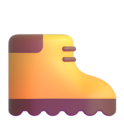
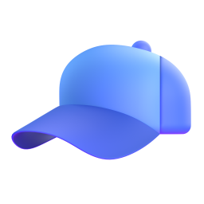
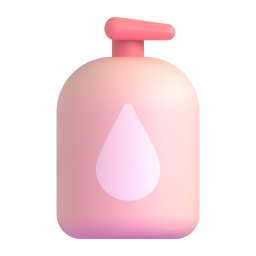
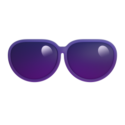

Read the shore from above
About 7 minutes. A drone took this photograph from straight above a rocky shore at low tide. The sea is at the top; the land is at the bottom.
Different organisms live in different bands across the shore. This pattern is called . Press each band to see it on the photograph.
Scale: the tape in part 3 is 10 m long. It is estimated from two people standing on this shore in the full photograph.
ReadWhy are there bands? B4.1.4 · B4.2.12
Each species has a for each . On a shore the main abiotic variable is the time out of the water. Higher on the shore, the rock is out of the water for longer at each low tide, so it becomes hotter and drier.
The upper limit of a species on the shore is often set by an abiotic variable, such as drying out (desiccation). Its lower limit is often set by : , grazing or predation.
So the band where a species lives shows its . With no competitors, grazers or predators it could often live in a wider band: its . In a famous experiment on a Scottish shore, Connell (1961) removed one barnacle species (Balanus); another barnacle (Chthamalus) then lived lower on the shore than before.
WordsWords you need on the field trip
Press a word to open its meaning.
CheckCheck yourself
TypeType the words
Choose a sampling method
About 7 minutes. You cannot count every organism on a shore, so you take samples. Press each method to see it on the photograph.
ReadTransect or random quadrats?
Along a (from the sea to the land, conditions change): use a transect. This is systematic sampling: the positions follow a rule.
Inside one zone (conditions about the same everywhere): use random quadrats. Random positions avoid : you do not choose the "interesting" spots.
ReadWhich organisms can you sample with a quadrat?
Quadrats work for organisms, which stay fixed to the rock: barnacles and seaweeds. They also work for slow-moving animals at low tide: limpets clamp to the rock until the sea returns.
Crabs, shrimps and fish move away from you. Estimate the size of a population of animals with capture–mark–release–recapture and the Lincoln index (C4.1.4).
ReadPercentage cover or a count?
: for organisms you cannot count one by one, such as a sheet of seaweed or a crowd of barnacles.
A count (the ): for individuals you can see separately, such as limpets.
Some field guides use the ACFOR scale (abundant, common, frequent, occasional, rare). These are ranks, not measurements.
CheckCheck yourself
TypeFill the gaps
Record the transect
About 10 minutes. An interrupted belt transect: 11 quadrats, 1 m apart, from the top of the shore (0 m) to near the sea (10 m). Estimate at least four quadrats yourself (for example 0, 3, 7 and 10 m), then press Fill the empty rows with our counts.
- Press a quadrat's number: beside the yellow tape on the photograph, or in the row below. Its quadrat opens.
- Estimate the percentage cover of each species. The quadrat is 0.5 m × 0.5 m and divided into 100 small squares. Count the squares that are at least half covered: each one is 1 %.
- Press Lift the seaweed. Barnacles and limpets often live under seaweed. Estimate the barnacle cover and count the limpets with the seaweed lifted.
- The rock temperature is read from a temperature probe on the rock.
The covers in one quadrat can add up to more than 100 %: seaweed lies on top of barnacles.
Two people estimating the same quadrat often differ by 5–10 %. On the shore, the same person should estimate the cover in every quadrat, so that the estimates are consistent.
Your entries stay in this browser only. Nothing is sent anywhere.
Random quadrats in one area
About 5 minutes. The red square on the photograph is a 5 m × 5 m area inside the middle shore. Sample it with 30 random quadrats, and record whether limpets and sea lettuce are present in each one. Record at least ten yourself, then press Fill the rest with our records.
The area is a grid of 10 × 10 squares, each 0.5 m × 0.5 m. Two random numbers from 0 to 9 give one square: the first counts across, the second counts down. In Google Sheets, =RANDBETWEEN(0,9) gives a random whole number from 0 to 9. If a square appears twice, or more than half of it is in a rock pool, take new numbers.
Number of quadrats in each group
For chi-squared you only need to know whether each species is in the quadrat or not. Present and absent are categories, so the test counts categories: it is not about how many limpets there are.
All the quadrats you have recorded
Test for an association: chi-squared
About 7 minutes. C4.1.15 · Are limpets and sea lettuce found together more often, or less often, than chance would give?
Correlate a species with an abiotic variable
About 7 minutes. B4.1.4 · Does the percentage cover of a species change with the rock temperature along the transect?
The whole transect: a kite diagram
The width of each kite at a distance shows the percentage cover there. The bar at the right shows 100 %.
SheetsDo it in Google Sheets
- Paste your transect table (part 3, Copy the table for Google Sheets) into cell A1 of a new sheet.
- Select the temperature column and one species column. Hold Ctrl (⌘ on a Mac) to select two columns that are not next to each other.
- Insert ▸ Chart. In the Chart editor, Setup ▸ Chart type ▸ Scatter chart. The abiotic variable must be on the x-axis.
- Customise ▸ Series: tick Trendline, set Label to Use equation, and tick Show R².
- In an empty cell type =CORREL(B2:B12, C2:C12). Change the ranges to your two columns. This gives Pearson's r.
- Compare the size of r (ignore the sign) with the critical value for your number of quadrats in the table below.
If your Google account is in Korean, the menus are in Korean: 삽입 ▸ 차트; 차트 유형 ▸ 분산형 차트; 맞춤설정 ▸ 계열 ▸ 추세선. The function names (CORREL, CHISQ.TEST) stay in English.
TableCritical values of Pearson's r
Critical values of Pearson's r at p = 0.05 (two-tailed). If your r is further from 0 than the critical value, the correlation is significant.
Write about your data
About 10 minutes. Exam answers about data use the same sentence patterns again and again. Type the missing word or number in each gap, then press Check. Spelling counts. The numbers come from your tables in parts 3 and 4.
WordsUseful words for data
- Trend: increases, decreases, rises steeply, falls gradually, stays constant, reaches a peak at …
- Strength: a strong / moderate / weak positive / negative correlation; no correlation
- Comparing: higher than, lower than, whereas, both, similarly, in contrast
- Evidence: r = …, p < 0.05, χ² = … (greater than the critical value of …)
- Careful claims: suggests, may, is associated with, is correlated with (not "proves")
Challenge
For any time you have left, and for anyone who wants a harder challenge. Use a calculator or Google Sheets. Give numbers to the precision asked.
On the shore, your team also counted the limpets in each of the 30 random quadrats:
Extra: the same analysis in R
For when you have finished parts 1–8. R is the free program many biologists use for their data. Follow the steps in RStudio, or in your browser on Learn R.
Learn R · Statistics in R runs real R in your browser. Its chi-squared and correlation stages use the same commands as below.
Your field trip
Parts 1–9 use a practice shore. On the field trip you sample a real rocky shore: dark volcanic rock, with shallow pools at low tide. What you study there depends on what you find, and your research question is your own. Your teacher’s workbook gives this year’s details: the place, the species and the deadline.
Before the trip · learn
What you may find
These three animals are common on this kind of shore. All three are molluscs that graze on the algae on the rock. On the day, your class chooses the two species to sample, from what you find.
A sea snail. Its shell is coiled and dark, with spiral rows of small pale bumps. The opening is round and pearly white inside, with a tooth on its inner edge. It moves slowly over the rock and hides in cracks.
A flat, cone-shaped shell with no coil. Ridges run from the top of the shell to its edge. Algae often grow on the shell. It clamps tightly to the rock, and at low tide it stays in one place.
An oval, flat animal with eight shell plates in a row along its back. A tough rim, the girdle, surrounds the plates and is covered with short spines. It grips the rock very tightly.
A species you do not know? Photograph it and give it a working name, for example “red crust”. Use the same name all day, and identify it later. Photographs: Dr Daniel Mompel Riera, CC BY-NC-SA 4.0 (press a photograph to see it larger).
What you measure
| Variable | Unit | Instrument |
|---|---|---|
| Distance along the transect, from the sea or the high-tide mark | m | tape measure |
| Number of each of your two species in each quadrat | none (a count) | your eyes: count each animal |
| Water temperature | °C | temperature probe |
| pH | none | pH probe |
| Salinity | the unit on the probe’s screen, often ppt (parts per thousand) | salinity probe |
You count these animals (their abundance): you do not estimate a percentage cover. They are not : they move. But they move slowly, and at low tide limpets and chitons clamp to the rock, so a quadrat can still sample them. Some may move, or hide in cracks, while you sample.
Before your first transect, measure the pH, the temperature and the salinity of the sea itself, to compare with the water on the shore.
Some animals lie on the edge of the quadrat. A common rule: count an animal only when more than half of it is inside. Use the same rule in every quadrat.
The uncertainty of each instrument
Your data analysis is marked partly on how you consider uncertainty. Give the uncertainty of each instrument in the heading of its column, for example Water temperature / °C ± 0.1.
- A digital probe: ± the smallest step its screen shows. If the probe’s manual gives a larger uncertainty, use that one.
- A scale you read by eye, such as a tape measure: ± half of its smallest division.
- A count has no instrument, but two people can count differently: the same rule for the edge of the quadrat keeps the counts consistent.
Back at school: your mini IA
Your write-up is marked on three things: the research question, its background and the data analysis. This page does not give you a research question, a results table or an analysis of your data: they are your own work. It gives you the skills:
- Chi-squared, for an association between your two species: part 5.
- Pearson’s r or Spearman’s rank, between one species and one abiotic variable: part 6, and part 9 in R. Use the raw data of every quadrat, not means.
- Sentences about data: part 7.
- How each part of the write-up is marked, at IA level, in the Write-Up Lab: the research question, the background, results tables, graphs and statistical tests.
On the day · get ready
How the day works
- You work in a group. Each person takes each role in the group at least once: your workbook names the roles.
- Each group lays a belt transect of 10 quadrats, out from the sea or the high-tide mark, at three different places along the shore: three repeats. Choose a line that no other group uses.
- The class puts its raw data in one shared spreadsheet. Share only raw data: you process the data yourself.
Bring

Shoes with a good gripthat can get wet: wet rock and algae are slippery
A hatyou are in the sun for hours
Sun creamput it on before you leave, and again later
Sunglasseslight reflects off the water Water to drinkenough for the whole morning
Water to drinkenough for the whole morning A phone in a waterproof bagphotograph every quadrat, so you can check your counts later
A phone in a waterproof bagphotograph every quadrat, so you can check your counts later
- Check the tide time. Start as the tide goes out and finish before it comes back in.
- Wet rock and algae are slippery. Walk; do not run or jump between rocks.
- Never turn your back to the sea. Stay with your group and within sight of your teacher.
Do not pull limpets or chitons off the rock: count them where they are. Turn every rock back the way it was, and return every animal you pick up to the place where you found it.
In class, your teacher may also give you real IB questions on transects and chi-squared, with their IB mark scheme.